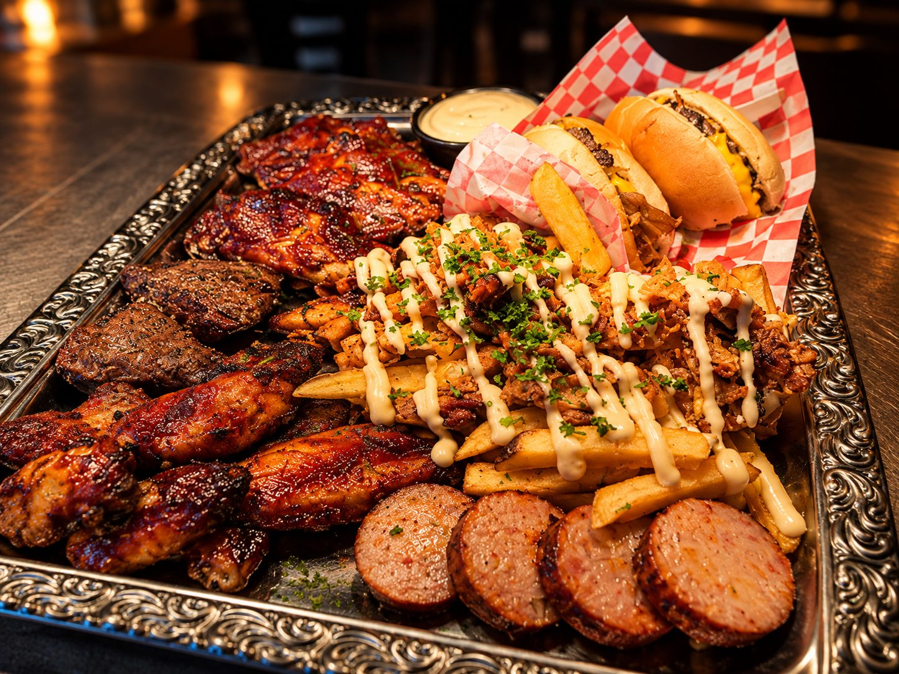

BBQ op locatie
Wij komen naar jou toe voor een onvergetelijke barbecue-ervaring. Volledig verzorgd, met of zonder bediening.
- Volledig verzorgd
- Kok en bediening in te huren
- Eigen barbecue of onze
Catering
BBQ, buffetten, walking diner, hapjes en broodjes. Met een chef die weet wanneer het vlees klaar is, met producten uit onze eigen keuken en zonder E-nummers.

Wat we doen
Elke gelegenheid heeft een eigen aanpak. Hieronder wat wij doen en wat erbij hoort.
Wij komen naar jou toe voor een onvergetelijke barbecue-ervaring. Volledig verzorgd, met of zonder bediening.
Verfijnde kleine gerechten van de barbecue, die rondgaan langs je gasten.
Bereid met onze ambachtelijke producten. Zonder E-nummers, met verse kruiden.
Eerlijke producten, zonder kunstmatige toevoegingen. Authentiek bereid.
Volledig warm buffet, BBQ-arrangementen en stamppotten. Alle combinaties en prijzen overzichtelijk bij elkaar.
Huisgemaakte belegde broodjes met brood van Bakkerij van Harberden. Ideaal voor lunch en events.
Hoe een avond verloopt
Van opzetten tot het laatste bord. Jij hebt een avond, wij hebben het vuur.
Wij zetten op, brengen het materiaal en zorgen dat alles klaarstaat voor je gasten.
De grill en de rookoven warmen op. Wesley bepaalt het vuur, de temperatuur en het moment waarop het vlees klaar is.
Hapjes of een walking diner, terwijl het vuur doet wat het hoort te doen.
Vlees van het vuur, vis uit de haven, en alles wat erbij hoort.

Wesley kiest het vuur. Jij kiest wat erop komt.
Vleespakketten, buffetten en hapjes, allemaal met producten uit de eigen keuken.
Voor de barbecue
Beide pakketten zijn per persoon. Je kiest zelf hoeveel personen, wij zorgen voor het vuur en het vlees.
Vuur en vlees
Wesley stuurt het vuur aan. De worsten gaan er als eerste op, het vlees volgt zodra het vuur op temperatuur is. Je kiest zelf wat erop komt.
€ 9,95 p.p.
Vijf soorten vlees voor de barbecue, voor iedereen.
€ 13,95 p.p.
Uit te breiden met een chef op locatie. Maximaal vijf personen.
Voor grotere groepen
Buffetten zijn er vanaf tien personen. Warm buffet naar keuze, BBQ buffet in twee niveaus en stamppotbuffetten met of zonder soep.

Kleinere groepen
Voor een lunch, een borrel of een feest waar de vuurplaats te groot voor is.
Per persoon, te bestellen vanaf vijf personen.
Vanaf tien personen, graag een dag van tevoren bestellen.
Huisgemaakte belegde broodjes met het brood van Bakkerij van Harberden in Melissant. Voor lunch en events.
vanaf € 50 per dag
Volautomatisch koffiezetapparaat voor je feest of partij, met bonen van Roger’s Coffee service. Slow roast, diverse melanges.
Praktisch
Buffetten zijn exclusief bestek, borden en buffettafels. Die rekenen wij apart af, zodat je weet waar je aan begint.
Prijzen zijn inclusief btw. Op maat maken wij een offerte.
Alles op een rij, inclusief de volledige samenstellingen.
Veelgestelde vragen
Voor buffetten vanaf 10 personen en voor catering op locatie maken wij een offerte op maat. De prijzen op de site zijn inclusief btw en gelden zolang de samenstelling hetzelfde blijft.
Ja. Voor BBQ, buffetten, walking diner en hapjes komen wij naar jouw locatie. De kok en bediening kunnen wij regelen, vanaf 57,50 per uur inclusief btw per persoon.
Bij de buffetten is brood met smeersels, fruitsalade, knoflooksaus en cocktailsaus standaard inbegrepen. Bestek, borden en buffettafels zijn dat niet, die worden apart berekend.
Voor borrelplanken adviseren wij minimaal tien personen en een dag van tevoren bestellen. Salades bestel je vanaf vijf personen. Voor buffetten geldt een minimum van tien personen.
Ja. De ruimte is 120 per dagdeel en standaard ingericht met flipover en whiteboard. Een beamer huur je op aanvraag. Koffie, lunch en borrel kunnen we erbij verzorgen.
De Ambachtswinkel heeft een terras aan de buitenhaven met uitzicht over het water. Je kunt bij ons eten, of je haalt je afhaalmaaltijd mee naar huis.
Aantal personen, datum en wat je in gedachten hebt. Wij maken een offerte met een vaste prijs en zorgen voor het vuur.